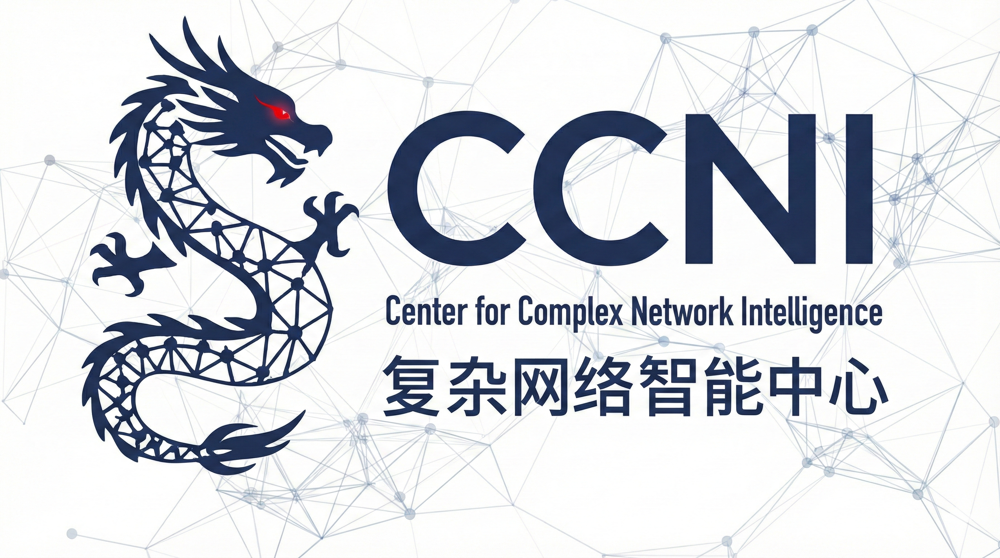

Call for Abstracts
We invite researchers, students, and professionals to submit abstracts for our satellite event. We welcome submissions specifically at the intersection of network science and artificial intelligence.
Selected abstracts will be invited to contribute to a joint special issue on "Complexity of AI" in the journals Entropy and Complexities.
Topics of Interest
The satellite welcomes submissions on the following topics (not limited to):
- Dynamic sparsity and efficient learning in natural and artificial intelligence
- Topological self-organization in adaptive complex systems
- Complex network intelligence
- Epitopological learning
- Network automata learning rules and plasticity mechanisms
- Brain-inspired sparse neural architectures
- Emergent intelligence properties in network-based artificial complex systems
- Higher-order interactions and learning in natural and artificial intelligent systems
- Network geometry and representation learning
- Non-Euclidean spaces for deep learning
- Network Science for AI & AI for Network Science
We especially encourage submissions on novel and original topics that bridge network science and artificial intelligence.
Important Dates
To align with the NetSci early bird deadline, we will use two submission rounds: Round 1 confirms abstract acceptance (without talk/poster designation), and Round 2 assigns talks vs. posters; new submissions are still welcome after Round 1. (AoE - Anywhere on Earth):
February 12 (AoE): Call for abstracts opensMarch 9 (AoE): DEADLINE: Round 1 submissionMarch 17 (AoE): Notification of accepted abstracts - Round 1- March 27: NetSci 2026 early bird registration deadline
- April 19 (AoE): DEADLINE: Round 2 submission
- April 28 (AoE): Notification of accepted talks and posters - Round 2
- May 23 (AoE): Final submission of poster/talk.
- June 1: NSIA Satellite 2026.
- June 1-5: NetSci 2026.
Submission Format
Abstract Format: One-page abstract (in PDF format) submitted anonymously. Your abstract may include one figure or table if needed. It MUST also include a small paragraph that directly argues why this paper is relevant to NSIA (doesn't count towards the one page limit).
Review Process: Double-blind peer review through OpenReview platform. We aim to have a minimum of three reviewers per submission, giving a score of 3 for talk, 2 for poster, and 1 for rejection.
Accepted Format: Accepted talks will be 10-15 minutes, depending on the number of accepted abstracts.
Prizes: There will be a certificate for best poster and the best contributed talk.
Submission Eligibility
The satellite does not have archival proceedings. Therefore, we welcome submissions that are recently published, under peer review, or works in progress.
Sponsors
